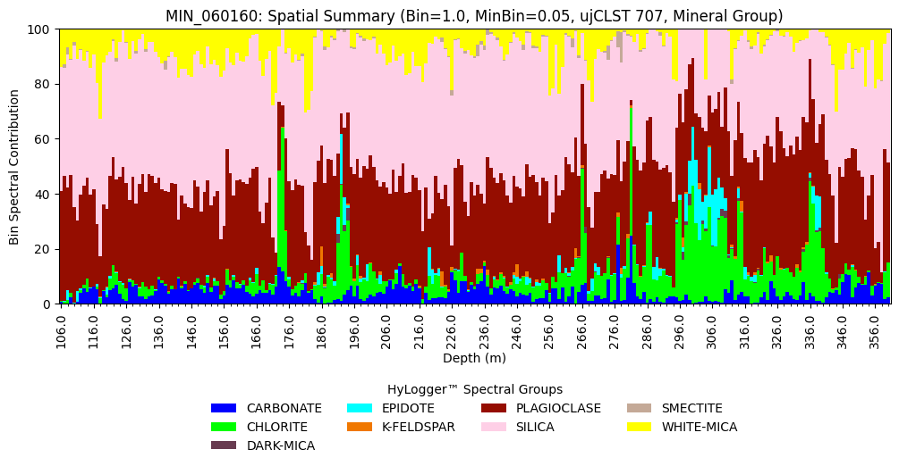

Summary Data
Generate Summary Data
Let’s start by importing the necessary modules and initialising the NVCL reader.
# Import the necessary modules
import pandas as pd
from nvcl_kit.generators import gen_summary_dataframe
from nvcl_kit.param_builder import param_builder
from nvcl_kit.reader import NVCLReader
# Initialise NVCL reader
param = param_builder("NSW")
reader = NVCLReader(param)
if not reader.wfs:
print("Error: Cannot contact service")
Now we can generate a summary dataframe for a single borehole. The dataframe will contain the percentage of each mineral group in each 1m depth bin. The metadata will contain information about the borehole and the parameters used to generate the dataframe.
boreholeid = "MIN_060160"
bin_size = 1.0
min_item_pct = 0.05
scalar_set = "ujCLST"
scalar_level="group"
meta, df = next(gen_summary_dataframe(reader=reader, nvcl_id_list=[boreholeid], scalar_set=scalar_set, scalar_level=scalar_level, resolution=bin_size, min_item_pct=0.05), None)
If you want to save the summary dataframe to a CSV file you can do so using the following code:
df.to_csv(f"summary.csv", index=False)
Plot Summary Data
Following on from the above example we can create a summary plot similar to what you will find in The Spectral Geologist™ software.
from matplotlib.ticker import MultipleLocator
# Generate the summary data and then plot it
meta, df = next(gen_summary_dataframe(reader=reader, nvcl_id_list=[boreholeid], scalar_set=scalar_set, scalar_level="group", start_depth="floor", weighted=True, resolution=bin_size, min_item_pct=min_item_pct, continue_on_missing=True), None)
# Create a colour map using the colour values from the metadata classifications
colors = {c[0]: c[1]["colour"] for c in meta["classifications"].items()}
# Create the summary plot
ax = df.plot.bar(x="StartDepth", y=df.columns[3:], stacked=True, figsize=(12,4), width=1.0, color=colors, ylim=(0,100))
ax.legend(title="HyLogger™ Spectral Groups", loc="upper center", bbox_to_anchor=(0.5, -0.25), ncol=4, frameon=False)
ax.set_title(f"{boreholeid}: Spatial Summary (Bin={bin_size}, MinBin={min_item_pct}, {scalar_set} {meta['scalar_algorithm_version']}, Mineral Group)")
ax.set_ylabel("Bin Spectral Contribution")
ax.set_xlabel("Depth (m)")
ax.axes.xaxis.set_major_locator(MultipleLocator(10))
ax.axes.xaxis.set_minor_locator(MultipleLocator(2))
